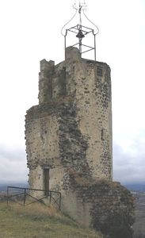
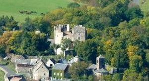
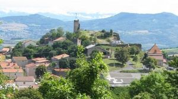
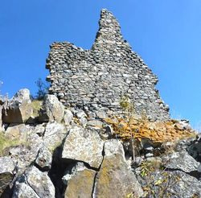
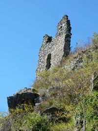
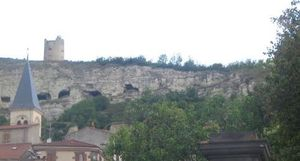
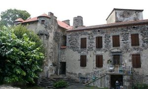
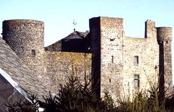

Recensement Jean-Claude Truffet
| Département | 63 — Puy-de-Dôme |
| Canton | Veyre-Monton |
| Commune | Le Crest |
| Type d'édifice | Château |
| Période d'origine | XIII |








CREST (le), en 980 est connu Aymuin, l'ancêtre de la famille, témoin d'une donation à Cluny par le vicomte de Clermont. Vers 1017, son fils Elie est dit seigneur du château du Crest . En 1111, un autre Elie est chevalier de l'oppidum du Crest, terme qui désigne une agglomération fortifiée, un village est dès lors associé au château. En 1215 Helias du Crest fait hommage au dauphin pour son château. Dans la première moitié du XIIIe siècle le château est toujours à la famille éponyme, se transmettant le prénom Elie. En 1249, une partie du château est passée à un collatéral Robert de Lantoiol, qui se dit seigneur. En 1262 le comte dauphin Robert II fait hommage à Alphonse de Poitiers (frère de St Louis), apanagé de la "Terre d'Auvergne", pour le château tenu par les héritiers du Crest. Le Crest est alors devenu une co-seigneurie divisée en deux parts aux mains des gendres, les Lantoiol, dont héritent les Bussières, d'une part et les Saint Floret d'autre part. En 1278 est mentionnée la chapelle du château. En 1299, Géraud de Bussières est seigneur de Châlus et co-seigneur du Crest pour moitié; en 1303 et 1307 il est dit seigneur de Châlus, du Crest et de Saint-Agoulin. En 1452, Henri et Jean Bour sont châtelains et disposent d'une résidence dans l'enceinte du château. La famille des seigneurs du Crest s'éteignit vers le milieu du XIIIe siècle.
Rien à voir avec le château dans la commune du Creste canton de Champeix qui au XIIe siècle, Durand de Crestes, seigneur attesté en 1199 au XIIIe siècle 1262, Robert, Dauphin d'Auvergne, rend foi-hommage au Prince Alphonse de Poitiers pour Crestes qu'il reconnut tenir de lui en arrière fief. Au XVIe siècle, seigneurie est à la famille d'Apchier, Baron puis marquis de Montbrun au XVII-XVIIIe siècle seigneurie à la famille de Bosredon, Sénéchal de Clermont en 1789 .
Château-fort de Crest ruiné situé sur une butte isolée dominant le village, tour cylindrique surmontée d'une cloche (c'est le flanquement d'une enceinte) et base d'une autre tour. Dès la première moitié du XIe siècle et jusque dans les années 1700, Le Crest était une place forte ceinte de trois puissants remparts successifs comme le montre le dessin de Guillaume Revel daté de 1450. Ce village est bâti à l'extrémité de la Montagne de la Serre. Il est dominé par une tour, seul vestige d'une place forte, ceinte de trois puissants remparts successifs comme l'a montré le dessin de Guillaume Revel daté du XVe siècle. De la tour, on bénéficie d'un vaste panorama sur le plateau de Gergovie au nord, la vallée de l'Allier et le Livradois à l'est, le Massif du Sancy au sud, et la Chaîne des Puys à l'Ouest. Creste, forteresse dont je n'ai pas d'historique.
Famille d'Helias du Crest
"
Châteaufort de Crest avec sa tour de l'horloge et ses vestiges, et sa forteresse de Creste.